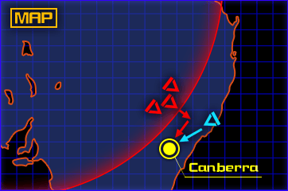

オーストラリア・キャンベラ
神宮司まりも
「司令！キャンベラの豪州軍から
密告が…。軍部はハイヴ制圧に
Ｇ弾を使用するとのことです！」
『誰』
「Ｇ弾！？ＢＥＴＡ由来の元素で
作られた人類には過ぎた兵器…。
何故そんな物が豪州に！」
香月夕呼
「秘密裏に米国から持ち込んだん
でしょ。やっぱりね、ＢＥＴＡは
それに引き寄せられたのね…」
『誰』
――そうか！豪州軍の秘密とは
これだったのか！しかしこれは
あまりに拙いぞ！！
香月夕呼
「確かにＧ弾を２発も使えば
ハイヴは確実に制圧できるし、
あれば使いたくなるのも解るわ」
『誰』
「何言ってるんです！横浜はそれ
で草木１本自生できない土地に
なったんですよ！？それに――」
『誰』
「横浜で使った２発は想定を
遥かに下回る威力だった！
もしそれが想定通りだったら？」
『誰』
「被害の規模や影響は計り知れ
ません！人類の食料庫たる豪州が
失われたら人類は――」
香月夕呼
「冗談よ、そんな事あたしが一番
解ってるわよ。あたしの危惧は、
首都キャンベラが襲われる事」
香月夕呼
「もし基地が襲われてＧ弾が
暴発したら首都は消滅。事実上
人類は終わりって事よね？」
『誰』
「そ、そうか…。す、すぐに
キャンベラに向け出撃します！」

香月夕呼
「キャンベラの被害は甚大か…。
次に襲われたら一巻の終わりね。
さて…どうするか――」
『誰』
「司令！ハイヴを――
エアーハイヴを我々で制圧
しましょう！」
『誰』
「戦力が圧倒的に不足なのは
承知の上です。が、このままでは
Ｇ弾が使われてしまいます！」
『誰』
「首都で暴発してもハイヴ制圧に
使われても、Ｇ弾が爆発した
時点で取り返しが付きません！」
『誰』
「桜花作戦も、絶望的状況で発令
されたと聞きました。俺の部隊を
信用してください！」
香月夕呼
「…『誰』、偶然ね。
あたしも同じ事を考えていたわ」
香月夕呼
「今の人類に分が良い賭けなんて
１つもない。常に最悪から勝利を
勝ち取らなきゃいけないのよ」

『誰』
「解っています！俺達はその為に
存在してるんです。
ハイヴは俺達が制圧します！」
香月夕呼
「わかった。『誰』、必ず
反応炉を破壊しなさい」
『誰』
「――了解ッ！！」